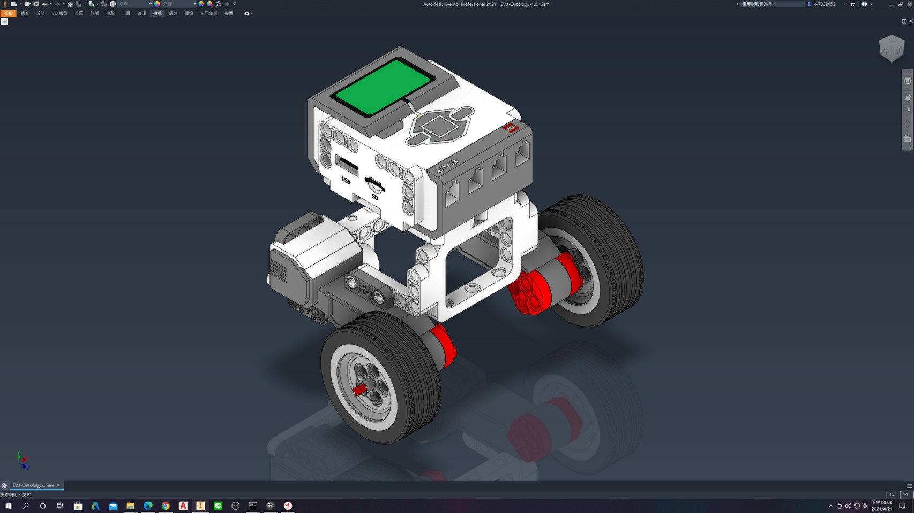
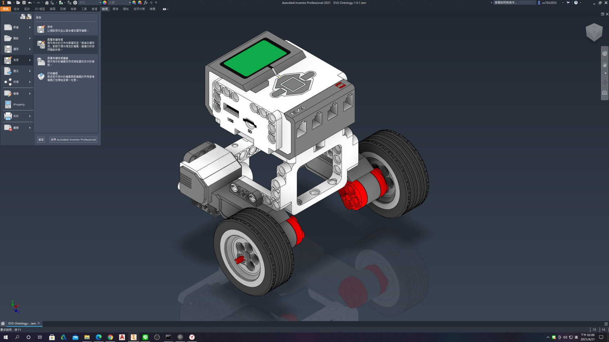
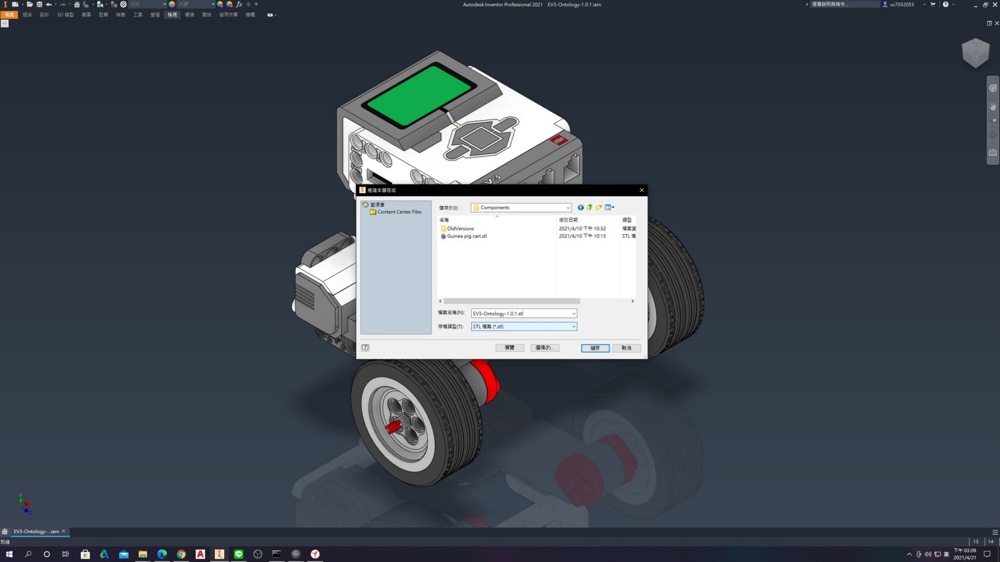
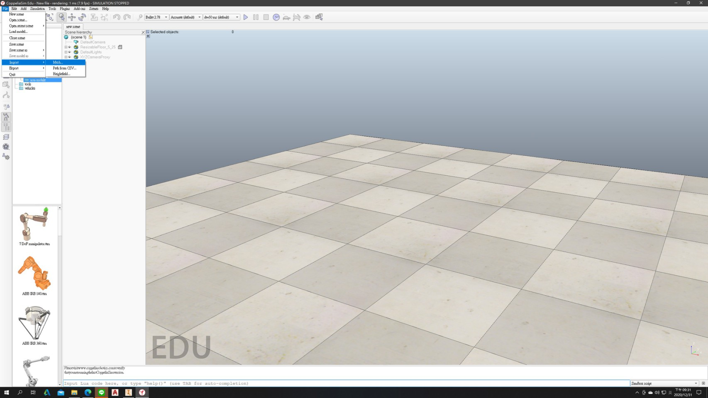
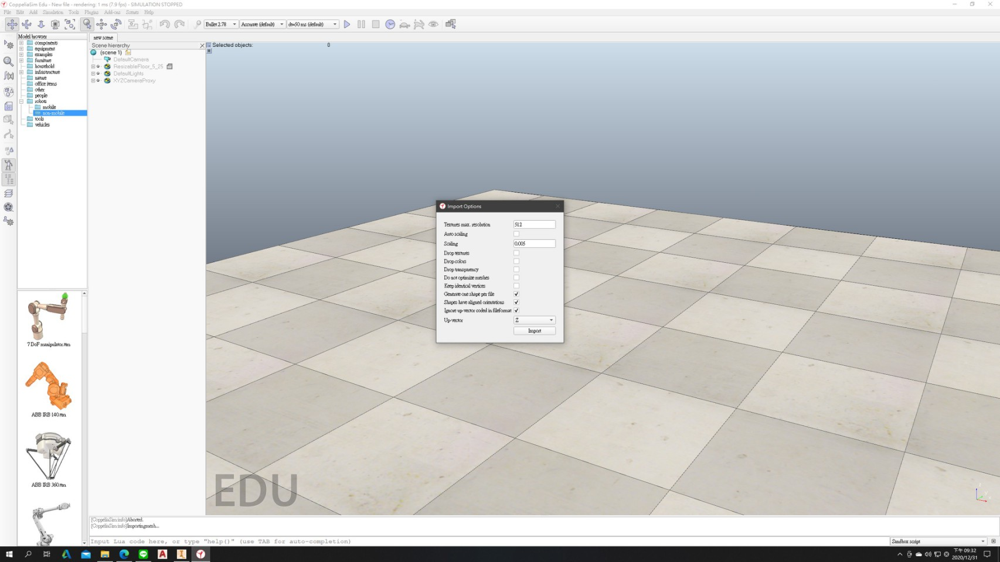
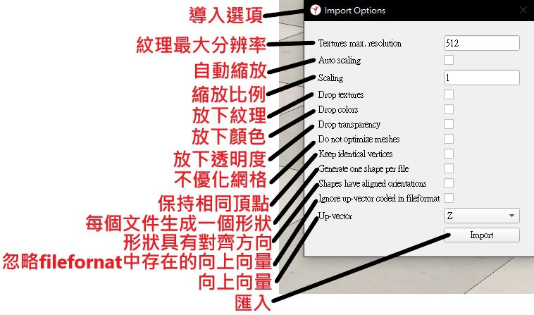
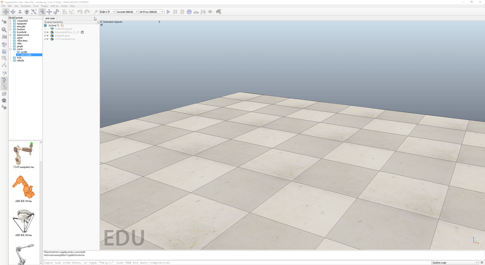

Coppeliasim basic <<
Previous Next >> Divide object
Import objects
Step1:
利用3D繪圖軟體(Autodesk Inventor Professional 2021),繪製所需物件。

Step2:
並將其匯出成STL檔案,可先將座標位置定好再做匯出(Z軸向上為佳)
以Inventor為例匯出STL檔案時須以另存成副本的方式,才能成功匯出STL檔案
步驟為:開啟Inventor-->開啟零件檔或組合檔-->檔案-->另存-->將副本儲存成...

將所需之STL檔案儲存至專案資料夾中。

Step3:
開啟coppeliasim匯入物件,步驟為: File-->import-->Mesh...

匯入物件設定視窗。

下圖為匯入選項之翻譯。

Step4:
匯入方法與設定操作。

Coppeliasim basic <<
Previous Next >> Divide object